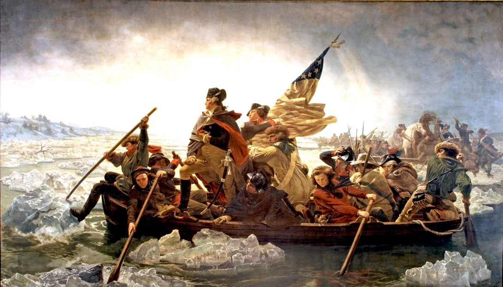
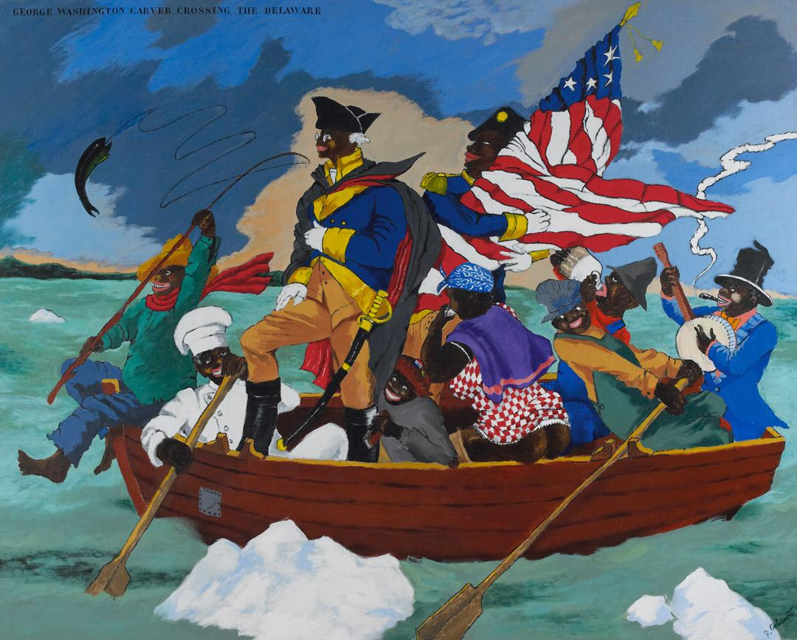

Introduction to Afrofuturism and Invasion
In science fiction, aliens are portrayed as creatures from other life forms, originating from planets or worlds beyond Earth. In many science fiction films, unworldly, terrifying aliens invade a community, taking it over with advanced technology and languages unknown to them. In this scenario, these foreign creatures have the intention of conquering, enslaving, and/or destroying humanity and the planet. Science fiction allows us to think beyond the bounds of our planet and imagine new worlds of exploration. Similarly, in real life, colonization refers to a powerful country exerting control over another region, often by settling its people there and exploiting the local resources and population for its benefit. In these real historical scenarios, colonizers act as aliens, exploring the “new world” of the African continent. From the 1880s to the 1960s, foreign European bodies invaded African communities, imposing their language, culture, religion, and technology onto the native peoples, similarly to how extraterrestrials in science fiction exploit humans.
In many ways, the unimaginable world of extraterrestrial invasion has already happened to the people of the African Diaspora. African Americans reclaim the story of alien invasion to tell a story of liberation through art and culture, imagining a world of equality that is sometimes viewed as more unlikely than an alien invasion. As paradoxical as it may sound, good fantasy is most often about reality; it enables us to perceive the real world more distinctly, and sometimes helps us go past surface illusions to the truth underneath.
Coined in 1992 by Mark Dery, Afrofuturism is the synergy of futuristic thought with the culture of those from Africa and/or the African Diaspora. Separate from African Futurism, which has its roots directly in the African continent, Afrofuturism merges science fiction, technology, and African diasporic history to challenge colonial narratives, reimagine Black identity, and envision a future of liberation through narrations of the past, present, and future. It reimagines both real events and pre-existing narratives to illustrate a thing of the future, an unrealized dream of fantasy. Afrofuturism originated as a way for Black speculative fiction artists to resolve feelings that for Black people, the apocalypse has already happened. For Black people, aliens have already invaded, imposing a foreign language, religion, and forceful relocation.
Narrative Afrofuturism and Classic Storytelling
It’s challenging to pinpoint the exact beginning of Afrofuturism. Many scholars believe it gained widespread popularity in the 1970s, primarily due to the influence of the “Black is Beautiful” movement. An early example of Afrofuturism is the 1978 musical film, The Wiz. Films Grease (1978) and Thank God It’s Friday (1978) were both released months before The Wiz (1978). Grease and Thank God It’s Friday drew inspiration from Motown, as seen in The Wiz, but were tailored more heavily to white audiences, like most films of the time. In the Wizard of Oz adaptation, Dorothy, a classically white, rural girl, is reimagined as a 24-year-old Black school teacher living in Harlem, New York, played by Diana Ross. She embarks on a journey to Oz, where she meets the scarecrow, played by Michael Jackson, and classic songs from the movie are transformed into gospel and R&B-inspired versions, such as “The Yellow Brick Road” becoming “Ease on Down the Road.”
The Wiz was inspired by L. Frank Baum’s book, The Wizard of Oz, transforming the seventy-five-year-old story into an urban fairytale rooted in Black vernacular culture. Dorothy, in both films, has a personality that is parallel to that of their environment. Dorothy in The Wizard of Oz is bored with the crop fields of Kansas and dreams of the land of Oz, a vibrant landscape filled with adventure and excitement. In The Wiz, Dorothy is comfortable in her overcrowded Harlem apartment in New York City, surrounded by dozens of noisy family members. She only gets whisked into the urban land of Oz when trying to save her dog Toto from a snowstorm.
This film acted as a representation of Blackness and the Black experience to children in response to historically predominant eurocentric and white narrative stories, with predominantly white protagonists. The film was released in the wake of the “Black is Beautiful” movement of the mid-1970s. The “Black is Beautiful” movement celebrated Black heritage and challenged eurocentric beauty standards. Upon its release in 1978, it could be seen as a flop, with some even saying that “it cost more than it earned and critics dismissed it as a saccharine, poor imitation of its Broadway predecessor.” But that was irrelevant to audience members who saw themselves represented on screen in ways they hadn’t before. The Wiz combines elements of Black culture with Baum’s classic story, reimagining what it would be like if Dorothy was an urban African American woman. It explored themes relevant to the Black experience, such as liberation and the Great Migration. Ytasha Womack, author of Afrofuturism: The World of Black Sci-Fi and Fantasy Culture (2013), told the Ford Theater, “For people of the diaspora, descendants of the Trans-Atlantic slave trade, there are lingering questions: How did I get here? What happened before? Where am I going?” The Wiz tells us the story of this confusion and growth through the eyes of Dorothy.
A more modern example of Afrofuturism is the 2018 Marvel Studios film, Black Panther. In this futuristic story, protagonist T’Challa returns home to the kingdom of Wakanda after the death of his father to take over as king. At the beginning of his reign, T’Challa must confront enemies who challenge his position and his kingdom’s relationship to the wider world. Unlike films before it, Black Panther imagines African society as more technologically advanced than the rest of the world. Sidney Blaylock claims in her 2023 dissertation, “It was not the records that were necessarily important to Black Panther’s ultimate success; rather, it was the fact that it established the [fictional] African nation of Wakanda as a technological utopia and the most advanced civilization in the Marvel Universe.”
African Americans around the world embraced the film and absorbed Afrofuturism concepts, particularly on the red carpet of film screenings. In addition to traditional tribal painted faces, many donned fur coats, dashikis, crowns, lion sashes, and outfits inspired by pre-colonial African kingdoms. According to W.E.B. Du Bois, this Pan-African identity connects Black Americans to Africans through shared racial struggles and resistance to colonization. Daniel Waldon wrote that Du Bois “was thus interested in Pan-Africanism because he saw it as essential to racial progress in general.”
Afrofuturism Art, Reimagining The Parallel
In other contemporary forms of Afrofuturism, artists reimagine the future instead of examining the past. These artworks draw on the science fiction roots of Afrofuturism to envision a society of inclusive and thriving African populations. Sun Ra, a 1960s and 1970s Afrofuturist musician, portrayed himself as a prophet “of outer space and infinity.” Sun Ra and musical groups such as Earth, Wind & Fire and Parliament-Funkadelic were among the first musicians to identify as Afrofuturists. A band of artists supported Ra to help him create jazz-inspired intergalactic music and films. Leroy Jones, a famous jazz musician, told The New York Times in 1968, “It is a black family. This leader keeps 14 or 15 musicians playing with him who are convinced that music is a priestly concern and a vitally significant aspect of black culture.”
In 1974, Sun Ra created the film Space Is the Place, which follows Sun Ra, who in the story had been reported missing from his European tour in June 1969. He lands on a new planet in outer space with his crew, known as the Arkestra, and decides to settle African Americans on this planet. The medium of transportation he chooses for this resettlement is music. One scene, entitled “Outer Space Employment Agency,” follows multiple people walking into the Outer Space Employment Agency, asking for a job. An older white man named Kurtis Rockwell walks into the agency to the reception desk, where Sun Ra sits with a tin foil hat. An Egyptian Bennu bird and lion statue sits behind him while a female character waves her arms. Kurtis Rockwell introduces himself as a designer of NASA guidance systems, looking for a job to feed his family of seven. He says, “We might end up being out on the street. Or what’s worse? [Whispers] welfare.” Sun Ra responds by saying, “I can give you a job, but considering the particular race you are…” Kurtis Rockwell cuts him off and exclaims that Sun Ra could cut his salary given his race. In reaction, Sun Ra assures him that “there are no salaries in our dimension.” Sun Ra illustrates in this film and other works his imagined world without salary, without African Americans being at the bottom of the racial hierarchy. He believed that in our current dimension church is only for the righteous, and only the righteous gain immortality. “I’d want everybody to have immortality. It’s too big for one nation, one people, or even one planet.”
In a documentary, Sun Ra told interviewers that “with all the churches you got, all the schools you got, all the government you got, you’re supposed to have a better planet than this.” Ra believed his work washed the minds of audience members from filthy vibrations that caused people to be racist and righteous, countering negative vibrations that tampered with people’s hearts. Some argue that Sun Ra’s work was appropriated due to his use of Egyptian iconography, as he lacked any biological or physical connection to Egypt, yet Ra never addressed the backlash. Even after the controversy, he left a lasting legacy of imagination and Afrofuturistic ideas. To this day, Sun Ra influences modern Afrofuturist artists, and his cosmic spirit lives on. In 2014, NPR’s “Tiny Desk” posted a video on YouTube of Sun Ra Arkestra, a band that continues to exist today, creating music inspired by Sun Ra over thirty years after his death. At the time of the video, the Arkestra was led by a 91-year-old saxophonist, Marshall Allen, who had been a band member since the 1950s. In a New York Times article written in 1968, Ra said, “I’m talking about cosmic things and demonstrating it in the music. The only thing that’s holding me back is that America’s not ready.” In the 1960s, America wasn’t ready for Sun Ra’s Mars-rooted cosmic ideas, but loyal followers continued the legacy indefinitely.
Reimagination of Real Historical Events
In a separate type of Afrofuturism, artists examine and interpret real past historical events to gain a deeper understanding of American history. Robert Colescott’s painting Washington Carver Crossing the Delaware: Page from an American History Textbook (1975) directly references Emanuel Leutze’s iconic scene, Washington Crossing the Delaware (1851).

In the original oil painting by Leutze, George Washington stands dramatically at the bow of the boat, the wind blowing, waves crashing, and the American flag billowing in the wind. The painting is symbolic of a pivotal moment in the American Revolutionary War, evoking a sense of patriotism in viewers.

In Colescott’s painting, he subverts patriotism, calling out racial biases in American history and art representation. He turns all the figures into racial caricatures, more stylistically unrealistic than Leutze’s iconic painting but potentially more representative of the true American experience. The symbolic flag blowing in the wind of Leutze’s work falls over in Colescott’s, awkwardly being hugged by a character standing behind Carver. At the front of the boat, one character happily catches a fish jumping out of the water, and at the back, another character smokes while playing the banjo. Both Leutze’s and Colescott’s boats are filled with stereotypes of their respective cultures. The white characters in Leutze’s painting are seen as stoic, serious, and focused. The Black figures in Colescott’s are scattered, happy, and perhaps naive in the face of imminent battle—dressed in stereotypically bright colors as the drunk, the banjo player, a shoe shine, an Aunt Jemima figure, and a barefoot fisherman. Even the water and sky are brighter colors and have more contrast. The second painting does not portray the same sense of unity, but may convey the diversity and independence that experts say the first painting lacks.
In 2021, Colescott told Sotheby’s Auction House that “What I did was to take something admirable, mess it up, and make you question everything that the artwork stood for.” David Galperin, Head of Sotheby’s Evening Auctions of Contemporary Art in New York, said, “In his radical re-interpretation of Leutze’s original image, Robert Colescott exposes the underbelly of American visual culture, stopping us in our tracks and challenging the world to re-think the tenets upon which our visual imagination is founded. With its social and political resonance and sheer pictorial force, today Colescott’s painting greatly rivals the iconic quality of its source image, offering a critical reckoning with the history of American art.” Colescott’s painting is representative of Afrofuturism because he reimagines the past to challenge racial biases and discrimination in America. He imagines George Washington as an African American caricature to make the audience question the biases of American society. This type of Afrofuturism isn’t cosmic, as seen in sci-fi-inspired artists such as Sun Ra and Black Panther, or fairytale-like as in The Wiz. It directly parallels historical events and pre-existing ways of thinking, which makes the message more digestible for the audience.
Significance and Conclusion
For people of the African diaspora, alien invasion has already happened. The fear of entities unknown imposing a foreign language and an unfamiliar culture has already happened. Being expelled from home to be exploited and enslaved is a historical reality. African diasporic people have long been drawn to out-of-this-world sci-fi stories within the genre. According to Tewodross Melchishua Williams, Associate Professor of Visual Communications and Digital Arts Media at Bowie State University and a scholar of hip hop culture, Afrofuturism is “a matter of people of African descent seeing themselves as a part of the future while also turning back or reflecting to African diasporic traditions in music and art. They used art as a form of escapism. Those who were thinking of escaping slavery or Jim Crow here… they were reimagining their current circumstances, a different future.”
Although the direct origin of Afrofuturism is unknown, artists such as Sun Ra in the 1960s and 1970s were among the first to combine Black culture, music, and science fiction. The Wiz (1978) was one of the first Afrofuturist films, later inspiring the writing and production of Black Panther (2018). Other forms of Afrofuturism can be more historically realistic, such as Colescott’s Washington Carver Crossing the Delaware (1975). Afrofuturism’s power and potential lie in how it challenges and changes the narrative literally and figuratively. Ytasha Womack, in her book Afrofuturism: The World of Black Sci-Fi and Fantasy Culture, asks: “Can you imagine a world without the idea of race? Can you imagine a world where skin color, hair texture, national origin, and ethnicity are not determinants of power, structure, or access?” Afrofuturism in films, music, art, and other media forces us to imagine these parallel worlds and question the reality of racism and Black culture today on our planet and in our timeline.
Bibliography
- Blaylock, Sidney. “The Future is Now: The Power and Promise of Afrofuturism.” PhD diss., Middle Tennessee State University, 2023. ProQuest.
- Bould, Mark. “The Ships Landed Long Ago: Afrofuturism and Black SF.” Science Fiction Studies, vol. 34, no. 2 (2007), pp. 177–186.
- Ford’s Theater. “Afrofuturism and ‘The Wiz’.” April 11, 2018. https://fords.org/afrofuturism-and-the-wiz/
- Greaves, Sharron. “A Cultural Interrogation of the Film, The Wiz.” PhD diss., Arizona State University, 2003.
- Kennedy, Gerrick. “On its 40th anniversary, a look at how ‘The Wiz’ forever changed black culture.” Los Angeles Times, October 24, 2018. https://www.latimes.com/entertainment/music/la-et-ms-the-wiz-40-anniversary-20181024-story.html
- Mugge, Robert. “Sun Ra: A Joyful Noise.” 1980. Video, 59 min., 17 sec.
- Sotheby’s. “Robert Colescott’s George Washington Carver Crossing the Delaware: Page from an American History Textbook, painted in 1975, comes to auction this May in New York as a highlight of the Contemporary Art Evening Auction.” 2021. https://www.sothebys.com/en/articles/robert-colescotts-george-washington-carver-crossing-the-delaware-page-from-an-american-history-textbook
- Walden, Daniel. “Dubois’ Pan-Africanism, a Reconsideration.” Negro American Literature Forum, vol. 8, no. 4 (Winter 1974), pp. 260–262.
- Wilson, John. “Sun Ra: ‘I’m Talking About Cosmic Things.’” New York Times, 1968, p. D17.
- Womack, Ytasha L. Afrofuturism: The World of Black Sci-Fi and Fantasy Culture. Lawrence Hill Books, 2013.